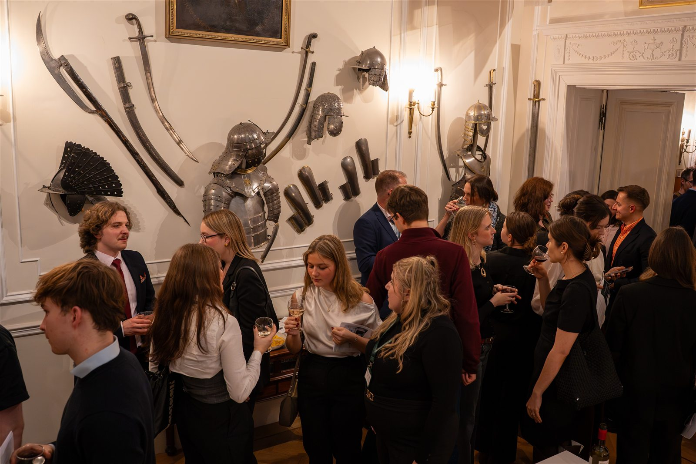
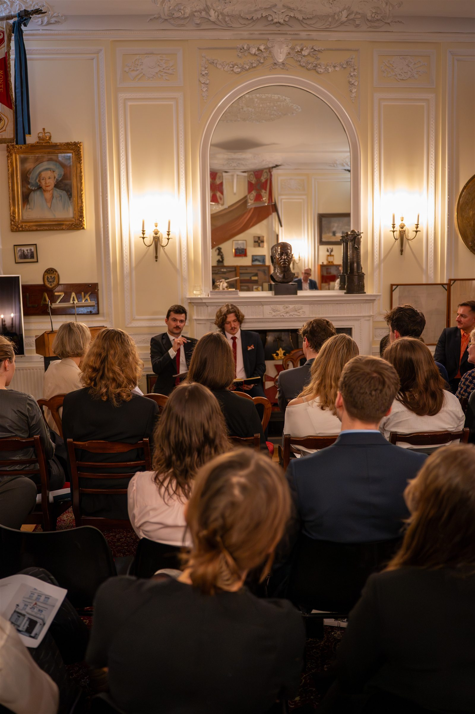
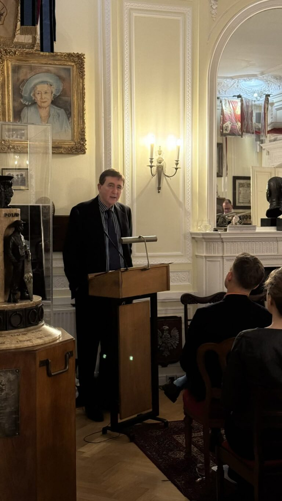
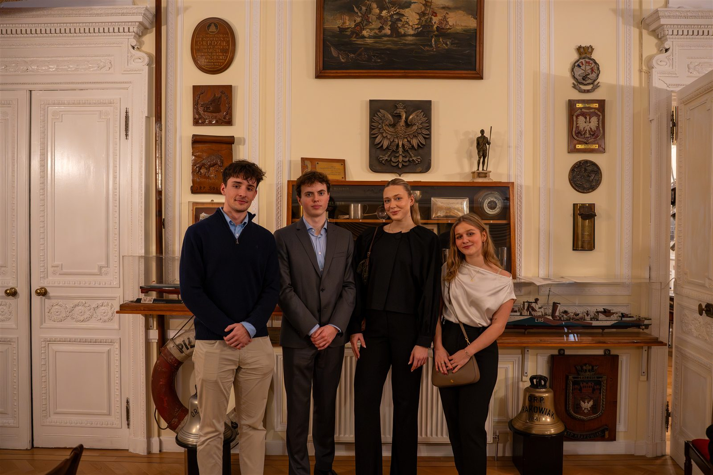
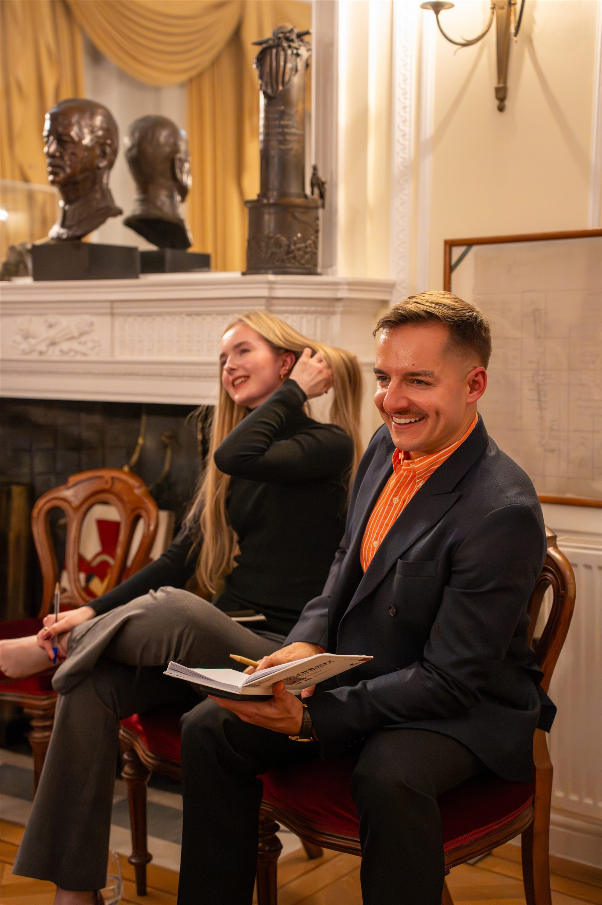

Wieczór krytycznego myślenia i konstruktywnej debaty w Instytucie Polskim i Muzeum im. gen. Sikorskiego.




10 lutego 2026 roku Federacja Polskich Stowarzyszeń Studenckich w Wielkiej Brytanii zorganizowała wyjątkową debatę akademicką Jak myśleć o polityce w spolaryzowanym świecie w Instytucie Polskim i Muzeum im. gen. Sikorskiego w Londynie.
Wydarzenie zgromadziło studentów, młodych profesjonalistów, naukowców i członków polskiej społeczności na wieczorze poświęconym krytycznemu myśleniu, debacie politycznej i konstruktywnej dyskusji. W odróżnieniu od wielu współczesnych sporów politycznych celem nie było promowanie konkretnego poglądu, lecz przyjrzenie się temu, jak kształtują się opinie polityczne w czasach coraz mocniej zdominowanych przez emocje, algorytmy, narracje medialne i polaryzację.
Wieczór otworzył wykład profesora Nicholasa O'Shaughnessy'ego, czołowego eksperta w dziedzinie perswazji politycznej, propagandy i komunikacji strategicznej. W swoim wystąpieniu profesor przeanalizował związki między polityką, emocjami i mediami cyfrowymi, dzieląc się cennymi spostrzeżeniami na temat wyzwań stojących przed demokracjami we współczesnym środowisku informacyjnym.
Po wykładzie odbyła się debata w stylu oksfordzkim wokół tezy:
„Ta Izba uważa, że polaryzacja polityczna w Polsce stanowi większe zagrożenie dla demokracji niż dezinformacja”.
Stronę propozycji reprezentowali Jacek Sagatowski, ekspert ds. politycznych w Ambasadzie Rzeczypospolitej Polskiej w Londynie, oraz Bartłomiej Maciejewski, student MSc Diplomacy and International Security na University of Strathclyde i publicysta The Lambert. Stronę opozycji reprezentowali Dr Roch Dunin-Wąsowicz z University College London oraz Katie Taylor, studiująca Politics, Sociology and East European Studies na UCL i członkini zespołu ds. wydarzeń Federacji. Debatę poprowadziła dziennikarka i redaktorka Maria Budzisiak, która moderowała dyskusję i sesję pytań od publiczności.
Zorganizowanie wydarzenia w Instytucie Polskim i Muzeum im. gen. Sikorskiego miało szczególne znaczenie. Instytut przechowuje jedną z najważniejszych kolekcji dotyczących najnowszej historii Polski poza jej granicami i przypomina o trwałym znaczeniu przywództwa politycznego, zaangażowania obywatelskiego i rzetelnej debaty publicznej. Po debacie goście mogli dowiedzieć się więcej o pracy Instytutu i zwiedzić część jego zbiorów z przewodnikiem.
Federacja serdecznie dziękuje Instytutowi Polskiemu i Muzeum im. gen. Sikorskiego za goszczenie wydarzenia, a w szczególności Danucie Bildziuk i Mike'owi Wójcikowi za wsparcie na każdym etapie przygotowań. Dziękujemy również naszym patronom medialnym, MyPolska.uk and British Poles, a także wszystkim, którzy przyszli i współtworzyli refleksyjną atmosferę tego wieczoru, pełną wzajemnego szacunku.
Jako jedno z pierwszych wydarzeń Federacji w tej formule debata pokazała, jak ważne jest dla nas tworzenie przestrzeni, w których o złożonych sprawach można rozmawiać z ciekawością, wzajemnym szacunkiem i w oparciu o fakty. Chcemy rozwijać ten sukces w kolejnych wydarzeniach łączących studentów, profesjonalistów i szerszą polską społeczność w Wielkiej Brytanii.
A jeśli nie byliście jeszcze w Instytucie Polskim i Muzeum im. gen. Sikorskiego w South Kensington — gorąco zachęcamy do odwiedzin. To miejsce o ogromnej wartości historycznej i kulturowej, ze zbiorami, które opowiadają historię najnowszej Polski jak żadne inne w Wielkiej Brytanii. Wstęp jest bezpłatny, a zwiedzanie zawsze odbywa się z przewodnikiem. Godziny otwarcia i więcej informacji na pism.org.uk.
